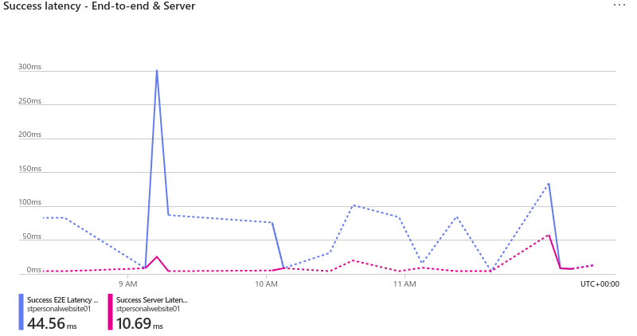

After publishing my article “Integrating a deployment counter to your CI/CD pipeline”, my static website recibed about 1.3k visits, not alot but it was enough to notice some performance issues.
To address this, I decided to transition from Azure Static Web Apps to a better setup using Azure Storage Containers and Azure Content Delivery Network (CDN).
In this guide, we’re diving into the world of hosting websites on Azure with the added benefit of Azure CDN. Although this is a step-by-step walkthrough, some experience with the Azure portal is required.
Create a storage account
First, we need to create a resource group that will contain all of the resources asociated with our website. Search for “resource group” on the Azure Portal marketplace. and select Create.
To enhance resource consistency and readability, I recommend that you define a naming convention using the Azure Best Practices Guide. Keep in mind that you might spend a few seconds thinking of a name, but you and members of your organization might read it hundreds or even thousands of times. So make sure to follow your organizations conventions and create a name that is clear and easy to read.
Name your resource group and select select your preferred region.

My resource group will be named rg-websitetutorial-prod-eastus-01.
On your newly created resource group select Create. Doing so will take you to the Azure Marketplace again.
Search for “Storage Account” and select Create.
Define a storage account name. For this tutorial I will use stwebsitetutorial01.
Select the desired region and replication strategy. These choices ensure your data’s availability and durability.
Setting up a static website
Static website hosting is a feature that you have to enable on your storage account.
In the left navigation pane, under “Data management” select Static website, then Enabled.
In the Index document name field, specify a default index page (For example: index.html). The default index page is displayed when a user navigates to the root of your static website.
In the Error document path field, specify a default error page (For example: 404.html). The default error page is displayed when a user attempts to navigate to a page that does not exist in your static website.
Then, save the changes.
Upload your files
Locally, the hugo command builds your site, publishing the files to the public directory. We will upload the files inside this directory to our Storage Account.
Back on Azure, in the left navigation pane, sellect Containers. In the containers pane, you will see a newly created container named $web, select the container to open the container’s Overview pane.
In the Overview pane, select the Upload icon to open the Upload blob pane. Next, select the Files field within the Upload blob pane to open the file browser. Navigate to the public folder, select all the files inside it, and then select Open to populate the Files field.
And that is all it takes to host your Hugo site on Azure. You can verify that everything is working by navigating to the storage account. On the left navigation pane, select Static Website, and there you will find the endpoints of your website. Access your website by visiting the URL of the primary endpoint. We will cover adding a custom domain later.
Leveraging Azure CDN
A content delivery network (CDN) is a distributed network of servers that can efficiently deliver web content to users. A CDN stores cached content on edge servers in point-of-presence (POP) locations that are close to end users, to minimize latency.
Azure CDN offers a global solution for rapidly delivering high-bandwidth content to users by caching their content at strategically placed physical nodes across the world.
Enable Azure CDN for the storage account
On the page for your storage account, select Blob service > Azure CDN from the left menu. The Front Door and CDN page appears.
Select Azure CDN as the service type and fIll the New endpoint section, keep in mind that your CDN endpoint name must be globally unique across Azure because it’s to access your cached resources at the URL *<endpoint-name>*.azureedge.net.
Change the origin host name to the Primary endpoint of your static website.
You can find the endpoint URL by accessing the static website pane of your storage account.
Adding a custom domain
Now that you have created an endpoint, you need to create a CNAME record for your website that points to the CDN endpoint we just created.
What is a CNAME record?
A “canonical name” (CNAME) record points from an alias domain to a “canonical” domain. A CNAME record is used in lieu of an A record, when a domain or subdomain is an alias of another domain. All CNAME records must point to a domain, never to an IP address. Imagine a scavenger hunt where each clue points to another clue, and the final clue points to the treasure. A domain with a CNAME record is like a clue that can point you to another clue (another domain with a CNAME record) or to the treasure (a domain with an A record).
Create two CNAME records with your DNS provider—one with “https” as the host and another with “www”. The value for both records should be the endpoint hostname that Azure provides. You can find the endpoint URL in the previous step, or you can locate it in the resource pane of the endpoint you created.”
Go to the azure portal, on the Overview pane of your endpoint select “Custom domain” add the hostname.
Bear in mind that, at the time of this writing, Azure DNS doesn’t support an apex or root domain with CDN Managed certificates. You must create, sign, and manage the renewal of your own certificate if you want to map the static website endpoint to a root domain. For now, this domain must adhere to the format: www.yourwebsitehere.com.
The hostname will appear under “Custom domains” in the resource pane, click on it and enable HTTPS on your custom domain for SSL and secure delivery.
Then, save the changes.
With CDN managed certificate, Azure CDN can take care of certificate management tasks such as certificate procurement and renewal, with no additional fees. Or you can use your own certificate (stored in Azure Key vault) or purchase a new certificate through Key vault.
You might have to wait for a few minutes for the changes to propagate.
Now you can access your website using your custom domain!
Verify latency metrics
Latency is generally considered to be the amount of time it takes from when a request is made by the user to the time it takes for the response to get back to that user. On a first request, for the first 14Kb bytes, latency is longer because it includes a DNS lookup, a TCP handshake, the secure TLS negotiation. Subsequent requests will have less latency because the connection to the server is already set.
Azure Storage provides two latency metrics for block blobs. You can access these metrics through the Azure portal by navigating to your storage account and selecting Insights from the left pane.
End-to-end (E2E) latency measures the interval from when Azure Storage receives the first packet of the request until Azure Storage receives a client acknowledgment on the last packet of the response.
Server latency measures the interval from when Azure Storage receives the last packet of the request until the first packet of the response is returned from Azure Storage.

Using Azure Storage Containers and Azure CDN to host your Hugo website offers a dynamic solution for both optimizing performance and ensuring a seamless user experience. By effectively leveraging these Azure services, you’ve not only enhanced your website’s speed and reliability but also established a solid foundation for further scaling as your audience grows.